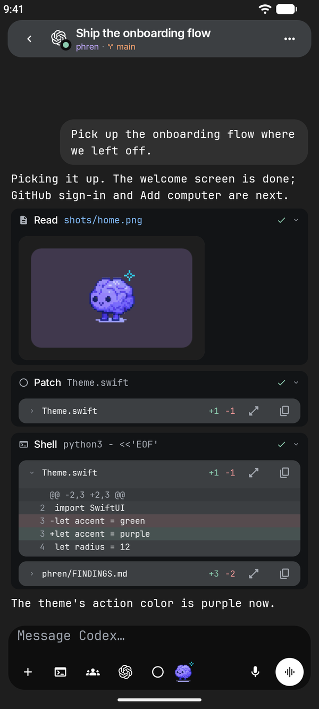
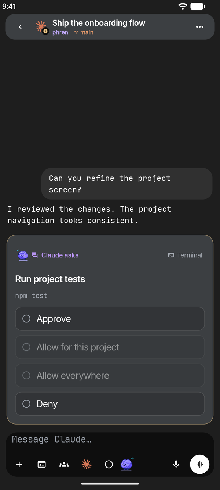
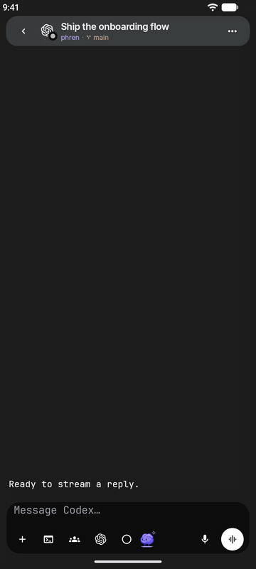
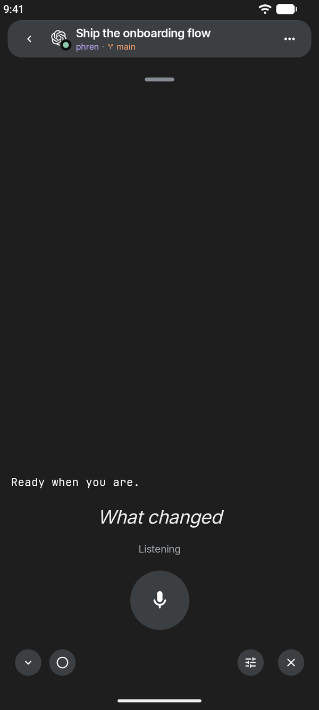
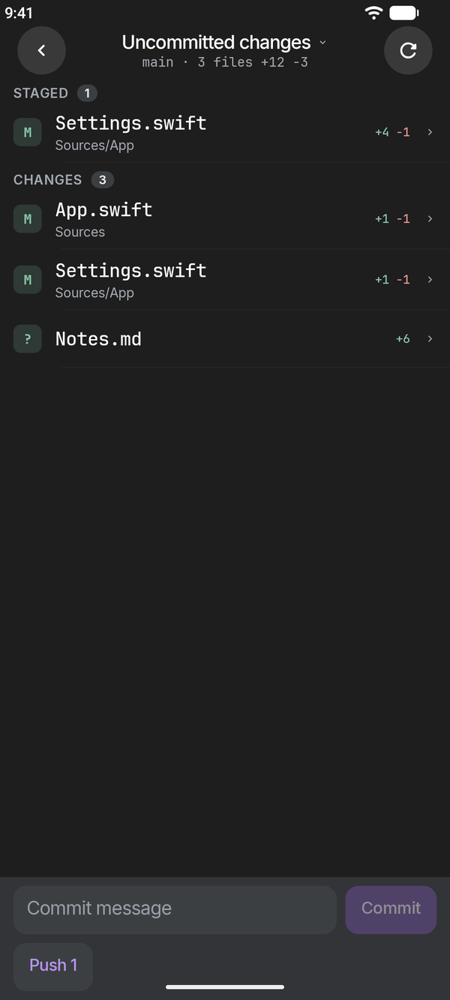
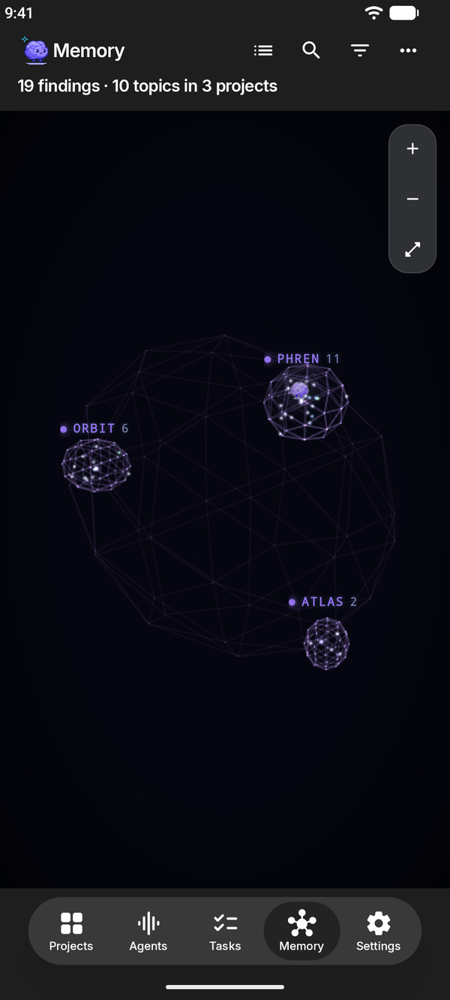

The same phren.
On Android.
Your memory and the coding agents on your own computers, on an Android phone. It uses the same store format, the same sync and the same Phren Hook as the iPhone app, so you can use both side by side.
Early testing · version 1.0.18 · Android 8.0 or later
Screenshots use sample projects and sample computers.



The main flows
Chat with every session
The agent’s conversation as it streams, command rows, changed files, permission requests and questions answered in the chat, photos and files, dictation, the model picker and Stop. Chat warns near your account’s 5-hour or weekly usage limit, with reset times and other accounts to switch to.

Talk mode
Speak, pause and hear the reply read back, hands-free.

Approve requests
Permission requests and questions appear in the chat and in notifications, so you can unblock an agent without going back to your computer.
Changes and pull requests
Git shows changes with staging, a commit box and Push, plus history, branches, pull requests and the repository’s other worktrees.

Memory
Projects, findings, notes, tasks and summaries, edited offline and synced to your GitHub store when you are back online, plus the same 3D memory graph as the iPhone app (shown here).

More in the app
- Projects, Tasks, Memory and Settings: the project grid, the review queue, the store's files and skills.
- Agents: every saved computer's sessions, pins, Busy versus Offline, and the last known list shown greyed while it reconnects. Add a computer by scanning its pairing code.
- Terminal: the computer's Herdr panes with a key bar for Esc, Tab, Ctrl and arrows, and Herdr workspaces to focus, rename, add and close.
- Start an agent on a computer, from a project or a task, and Pause all agents.
- Schedules, Code (what changed, files, most used, find by name), Simulators on a Mac, account usage and conductor grants.
Only on Android
- Share to phren. Share text from any app to Add to phren to save it as a task or note.
- Quick Settings tile. Add the Add phren task tile to capture a task from the notification shade.
- App shortcuts: hold the phren icon for Add task, Add note and Pause all agents.
- Home-screen widget: how many findings wait for review, with a tap into the review queue or your tasks.
Install
phren for Android is not on Google Play yet. We share test builds directly while we finish it. Write to us for one. This page will link the store listing when it exists.
Then follow Get started. The steps are the same on both phones.
What you need
- Phren Hook on each computer that runs your agents.
npx --yes @phren/cli@latest pairinstalls it and shows a pairing code. Scan it from Agents → Add computer, or open it with the camera app. - Herdr on that computer for chat, status, approvals and starting agents. What works without Herdr.
- SSH turned on, and Tailscale when you are away from home.
- A phren store, read from a paired computer or synced through a GitHub repository you own.
Not there yet
Some iPhone features are still coming to Android, including the newest iPhone releases: Continue in… by Claude account, and the conductor sheet.
- Web server previews. We have not shipped them because a local tunnel on the phone could be reached by other apps, and we want a safe design first.
- On-device reply summaries.
- Siri, Live Activities and Control Center controls are iPhone features. Android has the share target, tile and widget above instead.
Notifications on Android
With notifications on, phren checks your computers for agents waiting on you about every 15 minutes while it is closed, and reminds you before a schedule's next run. Android decides the exact timing and may delay checks to save battery. There is no push service in between: the phone asks your computers directly over SSH.
Permissions it asks for
- Microphone: only while you dictate or use talk mode.
- Notifications: to tell you when an agent is waiting on you, if you allow it.
- Network access: to reach GitHub and your computers. Android grants this without asking.
The pairing scanner is Google Play services' code scanner, so phren itself does not ask for the camera. Photos you attach come through Android's photo picker, which shares only what you pick.
Where your data goes
Store data moves between the phone and GitHub, or between the phone and your own computer. Session data comes from your own computers over SSH. We receive nothing. The privacy policy covers both apps and lists what Android's backup and speech services see.